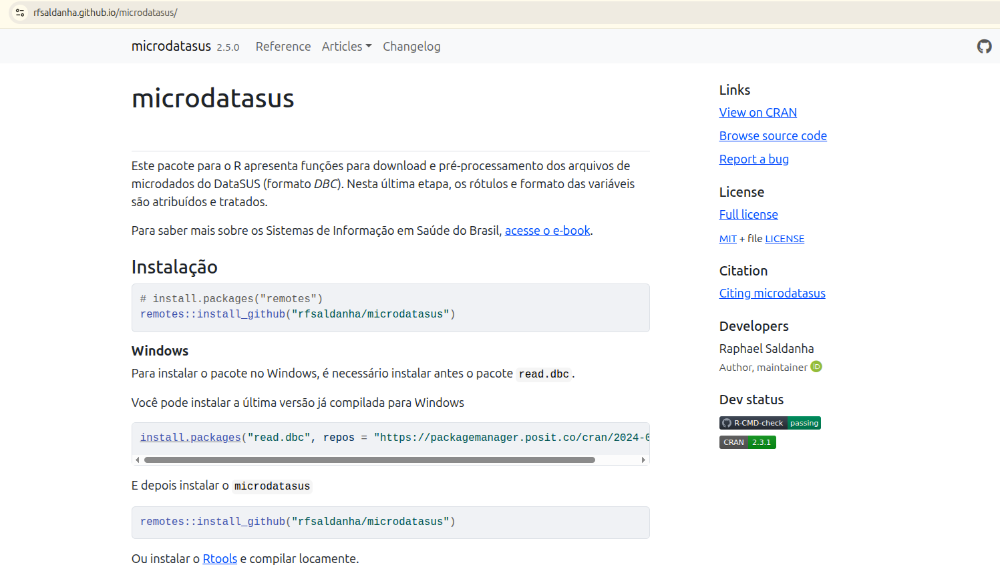

7 Parte 1 — Importação com microdatasus (R)
Nesta prática, trabalharemos com dois sistemas principais do DATASUS:
| Sistema | O que contém | Sigla do arquivo |
|---|---|---|
| SIM | Declarações de Óbito | DO |
| SIH | Internações Hospitalares | RD |
Código do município IBGE: cada município brasileiro tem um código de 7 dígitos definido pelo IBGE. Exemplo: Rio de Janeiro = 3304557. Este código é a chave que usaremos para filtrar os dados para o seu município de interesse. Consulte o código em: https://www.ibge.gov.br/explica/codigos-dos-municipios.php
Caso já tenha seu dado em mãos, pule para a última seção desta prática!
O microdatasus é um pacote R que automatiza o download e a leitura dos microdados do DATASUS, poupando a necessidade de acessar o FTP manualmente.

7.1 1.1 Instalação
# Instalar o microdatasus (via remotes, pois não está no CRAN)
install.packages("remotes")
remotes::install_github("rfsaldanha/microdatasus")
# Pacotes auxiliares
install.packages(c("tidyverse", "lubridate"))o microdatasus depende do pacote read.dbc, que requer o Rtools (Windows) ou ferramentas de compilação (Linux/macOS). Certifique-se de que estão instalados (ver Prática 1).
7.1.1 1.2 Baixando dados do SIM (óbitos)
library(microdatasus)
library(tidyverse)
# Definir o município de interesse (código IBGE de 6 dígitos)
# Exemplo: Rio de Janeiro = 330455
cod_municipio <- "330455"
# Baixar dados do SIM para o estado do Rio de Janeiro, anos 2020-2022
dados_sim <- fetch_datasus(
year_start = 2020,
year_end = 2022,
uf = "RJ", # sigla do estado
information_system = "SIM-DO" # Sistema de Informação sobre Mortalidade
)
# Processar as variáveis (decodifica categorias, converte datas, etc.)
dados_sim <- process_sim(dados_sim)
glimpse(dados_sim)
process_sim()é uma função do própriomicrodatasusque transforma o arquivo bruto do SIM em um data frame mais legível e pronto para análise. Entre as principais operações:
Converte datas — campos como
DTOBITO,DTNASCeDTATESTADO, que chegam como texto no formatoDDMMAAAA, são convertidos para o tipoDatedo RDecodifica categorias — variáveis codificadas numericamente (como
SEXO,RACACOR,CAUSABAS) recebem rótulos descritivos (ex.:1→"Masculino")Padroniza o código do município —
CODMUNRESeCODMUNOCORsão ajustados para 6 ou 7 dígitos, conforme necessário para cruzamento com tabelas do IBGECalcula a idade — quando possível, deriva a variável de idade em anos a partir de
DTNASCeDTOBITO
O argumento uf define o estado de onde os dados serão baixados. Sempre baixe pelo estado e depois filtre pelo município — o DATASUS organiza os arquivos por UF.
7.1.2 1.3 Filtrando pelo município
# Filtrar pelo código do município (coluna CODMUNRES = município de residência)
dados_sim_municipio <- dados_sim |>
filter(CODMUNRES == cod_municipio)
# Verificar
nrow(dados_sim_municipio)
head(dados_sim_municipio)Variáveis de município no SIM:
CODMUNRES— município de residência do falecidoCODMUNOCOR— município de ocorrência do óbito
Para análises de saúde local, utilize CODMUNRES.
7.1.3 1.4 Baixando dados do SIH (internações)
# Baixar dados do SIH (Autorização de Internação Hospitalar)
dados_sih <- fetch_datasus(
year_start = 2020,
month_start = 1,
month_end = 3,
year_end = 2022,
uf = "RJ",
information_system = "SIH-RD" # Registro de AIH aprovadas
)
dados_sih <- process_sih(dados_sih)
# Filtrar pelo município de residência do paciente
dados_sih_municipio <- dados_sih |>
filter(MUNIC_RES == cod_municipio)
nrow(dados_sih_municipio)De maneira análoga à
process_sim(), a funçãoprocess_sih()aplica transformações equivalentes aos dados brutos do SIH. As principais:
Converte datas — campos como
DT_INTER(data de internação) eDT_SAIDA(data de saída) são convertidos para o tipoDateCalcula o tempo de internação — deriva automaticamente a variável
DIAS_PERMcomo diferença entre entrada e saída, quando ausente ou inconsistenteDecodifica categorias — variáveis como
COBRANCA,COMPLEXeINSTRUrecebem rótulos legíveisPadroniza municípios —
MUNIC_RESeMUNIC_MOVsão padronizados para cruzamento com o IBGE